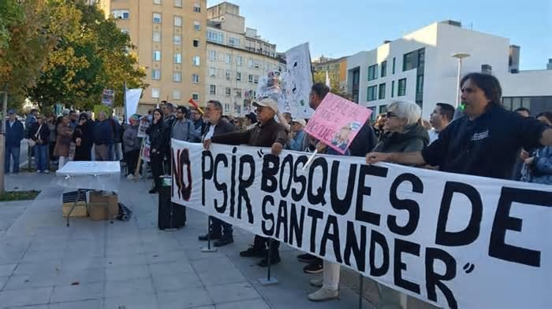

La trastienda del megaproyecto que avala el PP en Cantabria: acusaciones de "embargos" y movimientos "para multiplicar por diez el valor del suelo"

La oposición política denuncia el "pelotazo" urbanístico impulsado por el Gobierno de María José Sáenz de Buruaga (PP) para recalificar 2,3 millones de suelo no urbanizable en Santander Antecedentes - ...
La oposición política denuncia el "pelotazo" urbanístico impulsado por el Gobierno de María José Sáenz de Buruaga (PP) para recalificar 2,3 millones de suelo no urbanizable en Santander Antecedentes - ...
Noticia publicada por elDiario.es on MSN. Consulta el artículo original en elDiario.es on MSN para más información.